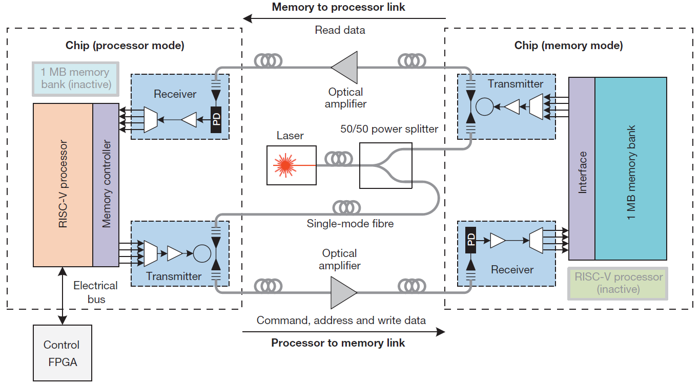
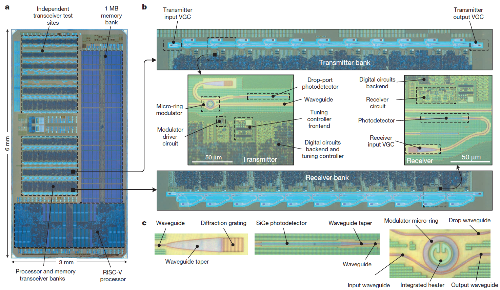
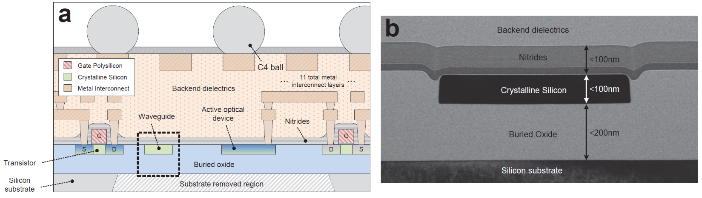

Silicon integrated photonics for optical communication
Introduction
Data transport across short electrical wires is limited by both bandwidth and power density. These limitations can be overcome by combining electronics and photonics on semiconductor microchips to speed the data transmission. Using optical communications is not a new idea, there is a real potential for better performance and power reduction. However, combining the two technologies on the same chip is very challenging.
According to a recent paper in Nature, entitled Single-chip microprocessor that communicates directly using light, researchers from UC Berkeley, University of Colorado, and MIT report fabricating a microprocessor with integrated photonic devices to directly communicate with other chips using light. This electro-photonic system integrates over 70 million transistors and 850 photonic components that work together to provide logic, memory, and interconnect functions. Most significantly, they have used standard CMOS manufacturing techniques. State of the art
General presentation
The main purpose of the project is to create a chip that can communicate with other components or others chips with light. The final goal of this study is to build electro-optic chips directly in the commonly used microelectronic devices so the foundry process used to build the photonic parts has to be compatible with electronics design manufacturing already existing.
The experimental setup consists of two identical chips optically connected by a full-duplex optical link with a round-trip distance of 20 m by fiber. The distance between the chips is arbitrarily chosen but remains the same during the experiments. One chip is used as a microprocessor and the other as a memory which means the memory part of the microprocessor chip is deactivated just as the microprocessor of the memory chip.
Figure 1 - Block diagram of the optical memory system
The microprocessor chip optically communicates to the 1MB memory by sending requests (a ‘read’ or ‘write’), the memory address (location in memory to read or write), and write data (for write requests) via the microprocessor-to-memory (P → M) link. The memory-to-microprocessor (M → P) link returns read data for read requests. A field programmable gate array (FPGA) provides the peripheral functionality of a motherboard, completing a user controllable computer.
A single 1,183-nm continuous-wave off-chip laser acts as the light source, split between both the P→ M and M → P links.
On-ship system
The electro-optic system is a 3 mm × 6 mm chip that contains a dual-core RISC-V microprocessor and an independent 1 MB bank of static random access memory that is used for memory. The chip was fabricated using a commercial high-performance 45-nm complementary metal–oxide semiconductor (CMOS) silicon-on-insulator (SOI) process. All the optical devices were designed to comply with the native process-manufacturing rules.
Figure 2 - The electro-optic system on a chip
Next to the processor and the memory are the transmitter and receiver banks directly linked to the wave guides. The electrical information is converted to a light signal using the micro ring modulator and it is converted back with a photodetector.
Optical wire
Silicon is transparent and has good optical properties at 1,180 nm therefor this wavelength band has been selected. At these wavelengths, the optical propagation loss in silicon waveguides is 4.3 dB cm−1 which is close to the losses encountered on the telecommunication industry (3.7 dB cm−1 and 4.6 dB cm−1 with wavelengths of 1,300 nm and 1,550 nm respectively).
Waveguides are build the closest to the electronic part as possible in order to reduce the size of the system and to make the fastest data transfers. The minimum separation between transistors and waveguides is about 1 μm, which is set only by the distance at which evanescent light from the waveguide begins to interact with the structures of the transistor
Figure 3 - Chip cross-section
Optical modulator
The modulator is a silicon micro-ring resonator with a diameter of 10 μm, coupled to a waveguide. The transmission response is a sharp stop-band filter at the resonant wavelength of the ring λ0. To modulate the light signal it is necessary to move the λ0 stop-band to the laser wavelength λL. This action result in sending a logical zero trough the waveguide. I order to do so a negative or positive voltage has to be applied across the junctions to deplete or refill the ring of free carriers (electron and hole concentrations) and influence the refractive index of the ring waveguide which shifts λ0.
As a resonant device, the modulator is highly sensitive to variations in the thickness of the crystalline-silicon layer as well as to varying thermal environments created by the electrical components. Both effects cause λ0 to deviate from the design value.
In order to stop this deviation of λ0 it is necessary to design a feedback loop system that can measure and adjust λ0. To do so the team researchers added a monitoring photodetector that generates photocurrent proportionally to the amount of resonating light in the modulator ring and maximized when λ0 = λL. Then a digital controller monitors the photocurrent and controls the power to a 400-Ω resistive microheater inside the ring to keep λ0 locked to λL under thermal variations.
The controller achieves initial lock (λ0 = λL) within 7 ms and has a tracking time constant of 13 μs after lock-on. This system provides up to 3 nm of change in λ0 and can compensate temperature swings of 60 K.
Benchmark
The demonstration uses only one wavelength running at 2.5 Gb s−1, providing an aggregate 5 Gb s−1 of memory bandwidth.
To measure the performance of the photonically connected memory in the computer, the team ran a combination of graphical programs. To run a program, the control FPGA first writes all of the instructions into memory. Once the program is fully loaded, the processor begins its execution by fetching the first instruction from memory. During program execution, the processor writes and reads program data to and from memory, in addition to reading the instructions from the memory. The control FPGA handles the printing of terminal outputs for the user.
The CPU was running at frequency of 31.27MHz and the average error ratio is less than 1.0E-13.
Conclusion
The team was able to make a microprocessor communicate with its cache memory placed 20m away and linked by optic fiber using light. The photonic chip has successfully run a complex graphical program. Even if the clock was slow compared to today’s CPU it is the first chip capable of integrating so much photonic components, so close to the electronic parts and without using other CMOS manufacturing techniques than the standard ones. This technology has demonstrated that it can work and the advantages are numerous. Knowing the limits of Moore’s law that industries are facing, the main CPU manufacturers have already started to search a way of using light to overcome those limits.